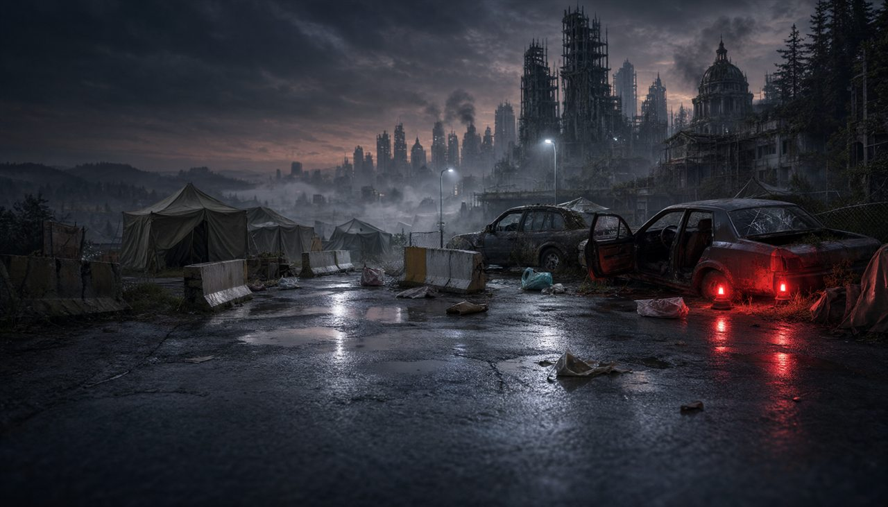
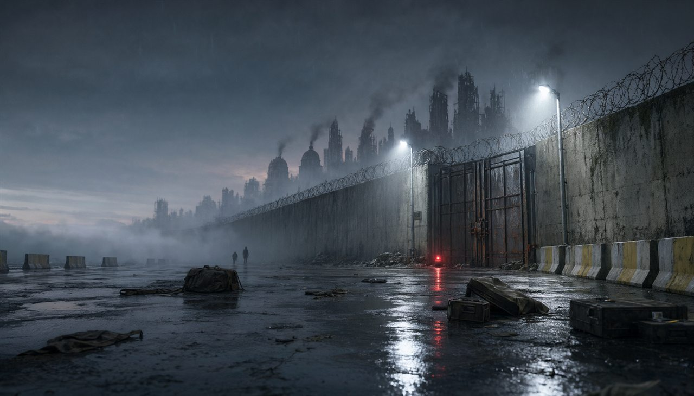
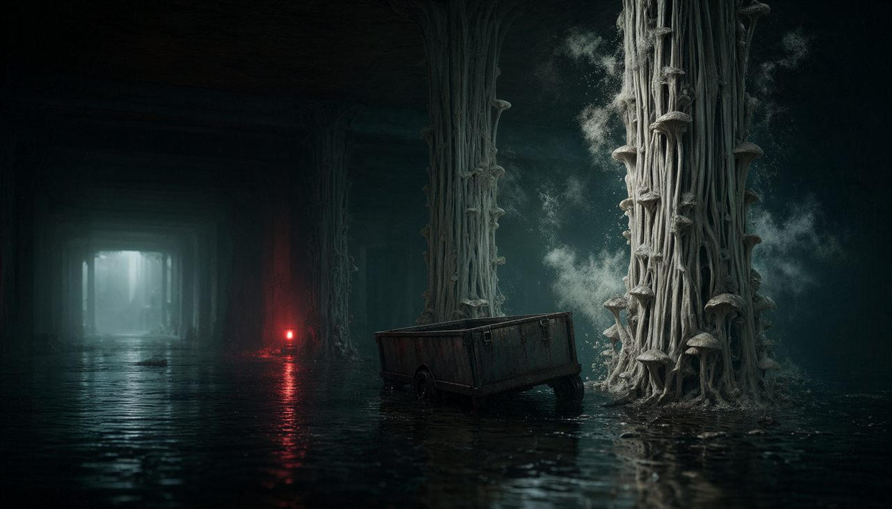
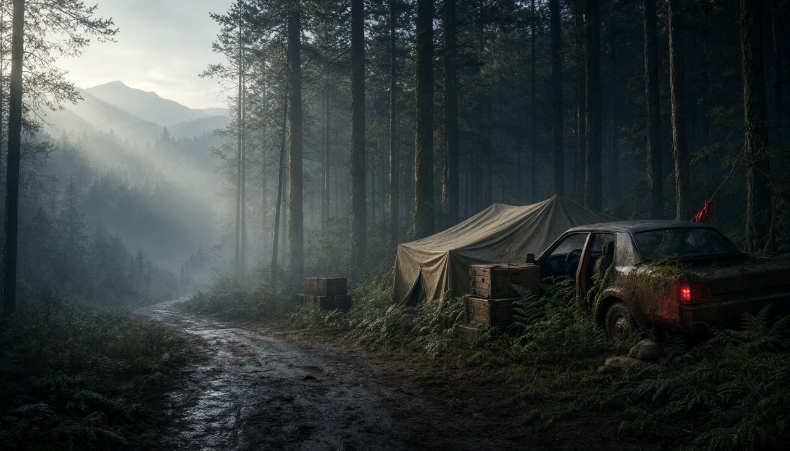
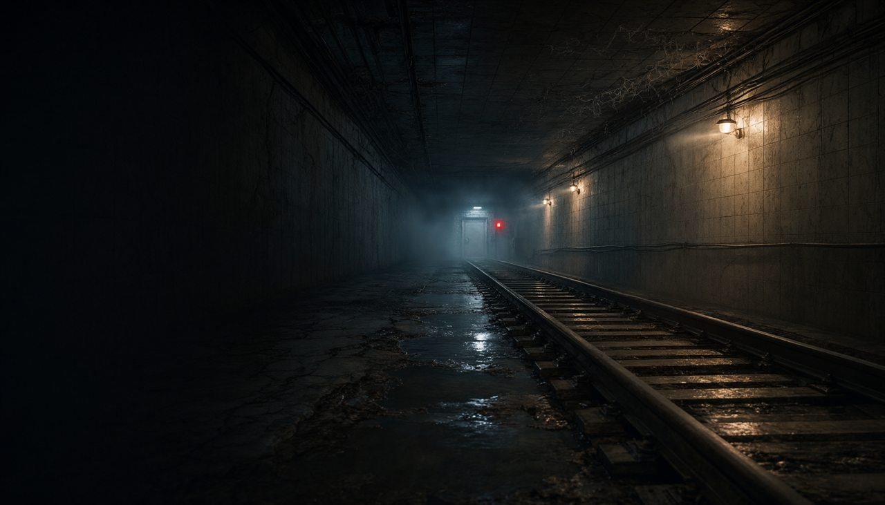
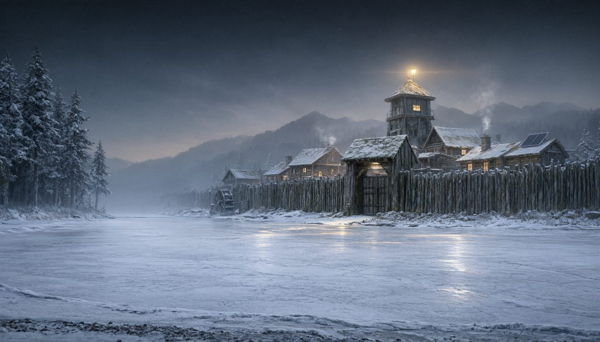
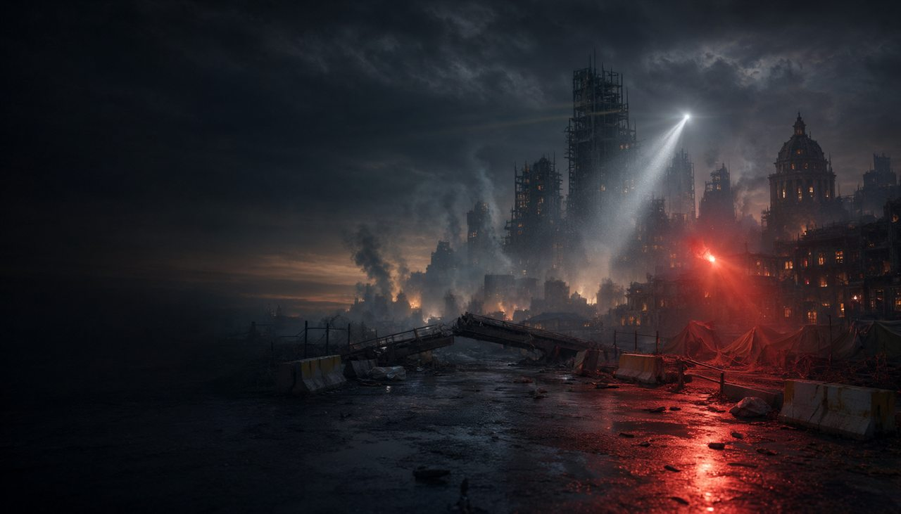
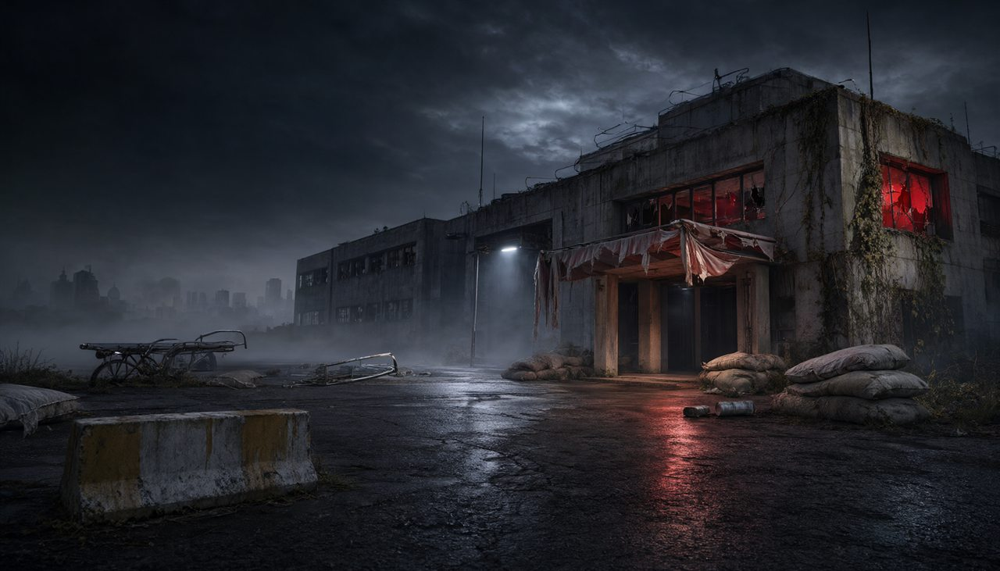

The GW7 standings and all 12 GW8 matchups are live. Track every survivor, every heart, and every battle across the Quarantine Zone.
8SAFE (33%)
8NORMAL (33%)
8DANGER (33%)
0ELIMINATED
SectorQuarantine Zone
PhaseGW8 In Progress
Survivors24 Active
SignalStable
Official Tournament Key Art
Archive // Timeline
TOURNAMENT CHAPTERS ROADMAP
The full post-apocalyptic timeline from GW3 to GW38
01Completed
01Active Sector
06Sealed Ahead
Survival RouteGW3 → GW38
COMPLETED
🕯️ Chapter 0 — THE OUTBREAK
GW3
البداية وتصنيف المشاركين الـ24 إلى SAFE وNORMAL وDANGER، دون مواجهات أو إقصاء.

FIELD RECORD
CURRENT (GW8)
🏙️ Chapter I — QUARANTINE ZONE
GW4 — GW8
مواجهات مباشرة 1v1، وتغيّر الحالات، ونظام الأرواح ❤️. لا يوجد إقصاء مباشر خلال هذا الفصل.

FIELD RECORD
LOCKED
☣️ Chapter II — THE INFECTION
GW9 — GW14
ظهور العدوى، ارتفاع المخاطر، وبداية الإقصاء الحقيقي؛ الوصول إلى صفر روح يعني الخروج من البطولة.

FIELD RECORD
LOCKED
🌲 Chapter III — THE FOREST
GW15 — GW22
مرحلة الموارد وأدوات النجاة مثل MEDKIT، مع أحداث خاصة قد تغيّر مجرى المنافسة.

FIELD RECORD
LOCKED
🚇 Chapter IV — THE TUNNELS
GW23 — GW30
أنفاق خطرة، وظهور Clickers في جولات خاصة، ومواجهات أكثر صعوبة.

FIELD RECORD
LOCKED
🏔️ Chapter V — JACKSON
GW31 — GW34
مرحلة الناجين المتبقين، مع تقليص المنافسة نحو الأربعة الأوائل.

FIELD RECORD
LOCKED
🔥 Chapter VI — FIREFLY WAR
GW35 — GW37
صراع المرحلة الأخيرة لتحديد المتأهلين إلى النهائي.

FIELD RECORD
GRAND FINAL
🏥 GW38 — THE HOSPITAL: THE FINAL
GW38
المواجهة الأخيرة بين الناجيين الأخيرين لتحديد البطل: THE LAST MANAGER.

FIELD RECORD
Signal // Community
🛡️
EMPERORES KINGDOM
11,000+ MEMBERS
HOST & COMMUNITY
EMPERORES KINGDOM FANTASY
The ultimate gathering for competitive Fantasy Premier League players. Built and managed by ZIAD, creating custom multi-layered tournaments that redefine standard FPL mini-leagues.
13K+Active Members
24Selected Survivors
ZIADProject Lead
Registry // GW7 Results
GW7 STANDINGS & STATUS
Field order by current state • GW8 in progress
Live results
Rank
Participant
Current State
GW7 Pts
Hearts
Threat
Survivors are grouped SAFE → NORMAL → DANGER. GW7 points load from the completed matches; GW8 scores remain pending.
Field Registry // GW7
SURVIVOR DOSSIER
24 SURVIVORS DISPLAYED
Pairings // GW8
GW8 — OFFICIAL MATCHUPS
Quarantine Zone Battles — 8 SAFE vs DANGER • 4 NORMAL vs NORMAL • 12 Matches
SAFENORMALDANGERGW8 scores pending
SAFEVSDANGER8 MATCHES
NORMALVSNORMAL4 MATCHES
Manual // Protocol
OFFICIAL SURVIVAL MANUAL
🟢 SAFE STATE
Reste en SAFE ou passe en NORMAL (si perd).
🟡 NORMAL STATE
Monte en SAFE (si gagne) ou tombe en DANGER (si perd).
🔴 DANGER STATE
Monte en NORMAL (si gagne) أو perd 1 cœur (si perd).
💀 HEARTS STATS
4 joueurs ont perdu des cœurs (Fatima, Wld Lhaj, Moulchi à 2/3 ❤️ | Abdel Chipi à 1/3 ❤️).